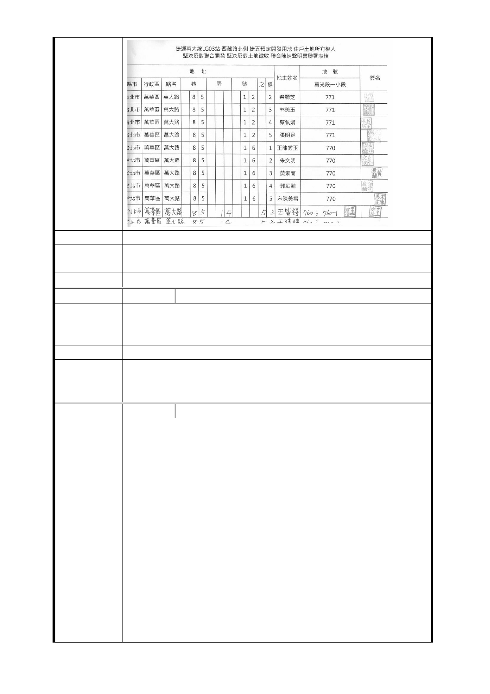

建議辦法
市府回應
意見
同編號捷五－1 回應意見。
委員會決議 同編號交一－1 委員會決議。
編 號 捷五-56 陳情人 應議員曉薇
萬華居民殷切期盼捷運萬大線施工，惟反對 LG03 站聯合開發
陳 情 理 由 及強制徵收，希比照善導寺站設立簡易型出入口，以免發生
如文林苑都更案遭強制徵收之情事。
建 議 辦 法 希捷運萬大線 LG03 站比照善導寺站設立簡易型出入口
市府回應
意見
同編號捷五－1 回應意見。
委員會決議 同編號交一－1 委員會決議。
編 號 捷五-57 陳情人 林○齊（101 年 6 月 8 日）
主旨：萬大捷運線 LG03 北側捷五聯合開發預定地臺北市政府
捷運工程局及台北市都市計畫委員會未曾與地主、住戶徵詢
與協調就私自劃設私有地之民宅為捷運出入口要求聯合開發
說明：
一、 此基地幾乎百分之百為私有地之民宅。
二、 台北市都市計畫委員會、臺北市政府捷運工程局在一
百年十一月二十九日舉行說明會本人才知九十九年
陳情理由
六月十一日已被禁建，為何政府不發公文告知地主
、如此行政瑕疵、損害百姓權益、怎不令人心寒。
三、 本人在此店面做生意已有二十五年之久，全家住在此
賴以維生，一旦聯合開發後生計無著落，全家人只
想要有個安身立命之所，不願意捲入任何利益糾葛
，堅決反對聯合開發，堅決反對強制徵收。
四、 我國憲法第十五條規定「人民之生存權、工作權及財
產權應受保障」，承認與尊重個人之財產權。我國憲
法第一四三條規定「中華民國領土內土地屬於國民
- 105 -